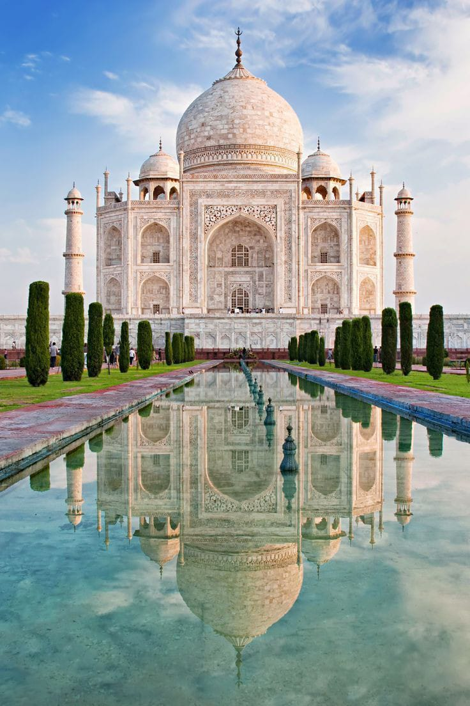
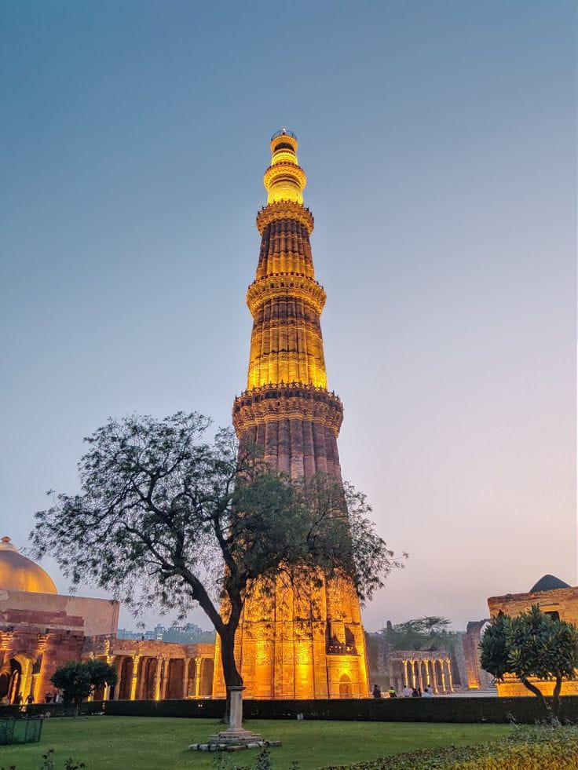
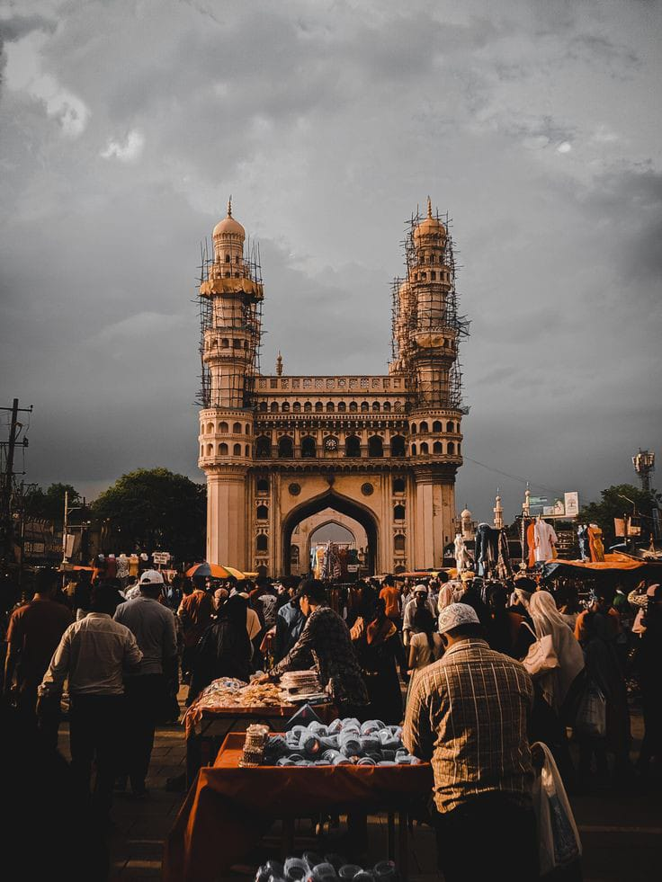
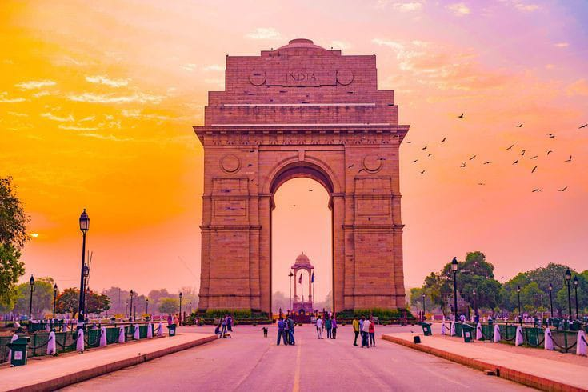
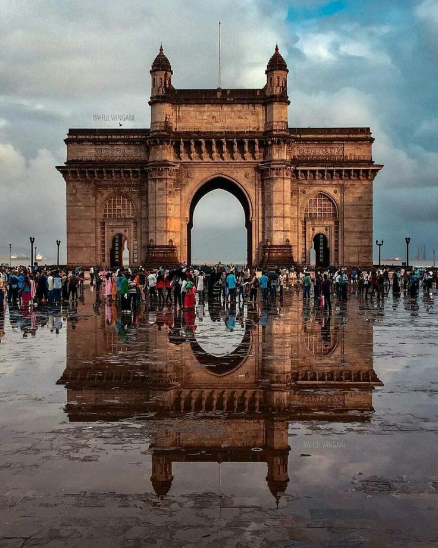
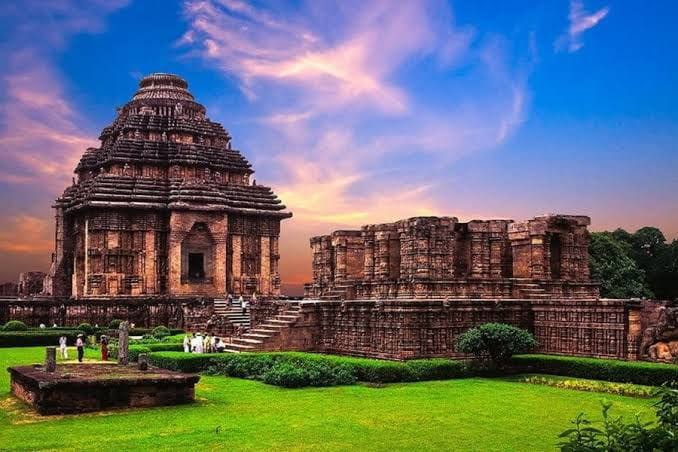

TAJMAHAL

The Taj Mahal is considered to be the greatest architectural achievement in the whole range of Indo-Islamic
architecture. Its recognised architectonic beauty has a rhythmic combination of solids and voids, concave
and convex and light shadow; such as arches and domes further increases the aesthetic aspect.The Taj Mahal
is an ivory-white marble mausoleum on the south bank of the Yamuna river in the Indian city of Agra. It was
commissioned in 1632 by the Mughal emperor, Shah Jahan (reigned from 1628 to 1658), to house the tomb of his
favourite wife, Mumtaz Mahal.
formoredetails
QUTAB MINAR

Qutb-Minar in red and buff standstone is the highest tower in India. It has a diameter of 14.32 m at the
base and about 2.75 m on the top with a height of 72.5 m.Qutbu'd-Din Aibak laid the foundation of Minar in
AD 1199 for the use of the mu'azzin (crier) to give calls for prayer and raised the first storey, to which
were added three more storeys by his successor and son-in-law, Shamsu'd-Din Iltutmish (AD 1211-36). All the
storeys are surrounded by a projected balcony encircling the minar and supported by stone brackets, which
are decorated with honey-comb design, more conspicuously in the first storey.
formoredetails
CHARMINAR

Charminar is the most prominent landmark located right in the heart of Hyderabad. The monument was erected
by Quli Qutub Shah to signify the founding of Hyderabad. As is evident from the structure, it was so named
as it consists of four minarets. Although it lies right in the centre of the city with traffic and crowds
milling all about it, Charminar certainly manages to hold the gaze. It is also famous for the market that
sprawls around it and is called 'Laad' or 'Chudi' Bazaar.
Since the construction of the monument in 1591, Charminar has been synonymous with the culture of Hyderabad
standing tall as a reminder of the glorious days of the past era.
formoredetails
INDIA GATE

India Gate, official name Delhi Memorial, originally called All-India War Memorial, monumental sandstone
arch in New Delhi, dedicated to the troops of British India who died in wars fought between 1914 and 1919.
India Gate, which is located at the eastern end of the Rajpath (formerly called the Kingsway), is about 138
feet (42 metres) in height.At the centre of New Delhi stands the 42 m high India Gate, an “Arc-de-Triomphe”
like archway in the middle of a crossroad. Almost similar to its French counterpart, it commemorates the
70,000 Indian soldiers who lost their lives fighting for the British Army during the World War I.
formoredetails
GATEWAY OF MUMBAI

The Gateway of India is one of India's most unique landmarks situated in the city of Mumbai. The colossal
structure was constructed in 1924. Located at the tip of Apollo Bunder, the gateway overlooks the Mumbai
harbor, bordered by the Arabian Sea in the Colaba district. The Gateway of India is a monument that marks
India's chief ports and is a major tourist attraction for visitors who arrive in India for the first
time.The main objective behind the construction of the Gateway of India was to commemorate the visit of King
George V and Queen Mary to Bombay (Mumbai). In March 1911, Sir George Sydenham Clarke, who was then the
Governor of Bombay, laid down the monument's first foundation.
formoredetails
KONARK SUN TEMPLE

The name Konark is made of two Sanskrit words: Kona, meaning corner, and arka, meaning sun. The town gets
its name from its geographical location which makes it look like the sun rises at an angle.The history of
Konark Sun Temple and sun worship goes as far back as the 19th century BC. The Konark Sun Temple, however,
was built in the 13th century. The historic region of Kalinga which comprises major parts of modern-day
Odisha and several parts of Chhatisgarh, Andhra Pradesh, and West Bengal, was ruled by the rulers of the
Eastern Ganga Dynasty from 5th Century AD to 15th Century AD. It was one of the most powerful dynasties in
India which gave existence to majestic temples like Konark Sun Temple and Puri Jagannath Temple.
formoredetails